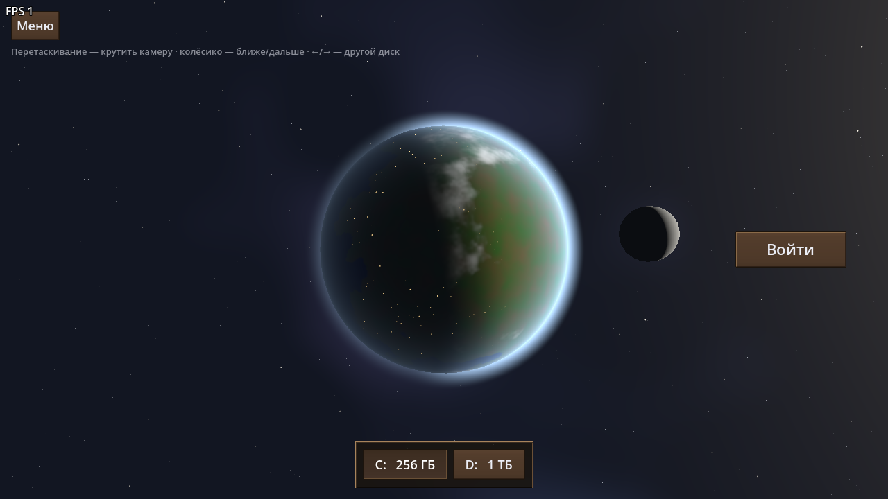
Диски — планеты
Каждый диск — 3D-планета с атмосферой, облаками и луной. Камеру можно крутить вокруг планеты, при смене диска она перелетает к другой.
Твои папки — города, файлы — жители.
Симулятор проводника: файловая система как живой мир вид сверху. Диски — планеты, папки — деревни и дома, а каждый файл — человечек со своей жизнью.
Godot ставить не нужно — один файл, просто запусти.
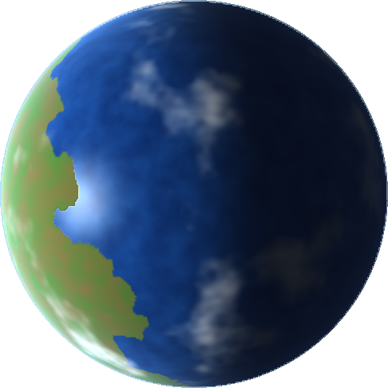
Игра в разработке: что-то может работать не так, многое ещё поменяется.
Язык меняется в настройках.
«Мои диски» показывают настоящие папки и файлы компьютера — только имена и размеры. Удаление и переселение происходят лишь в игре: настоящие файлы не меняются и не удаляются.
Видом сверху и живой колонией. Проект самостоятельный, графика своя.
Нажми на картинку, чтобы рассмотреть поближе.

Каждый диск — 3D-планета с атмосферой, облаками и луной. Камеру можно крутить вокруг планеты, при смене диска она перелетает к другой.
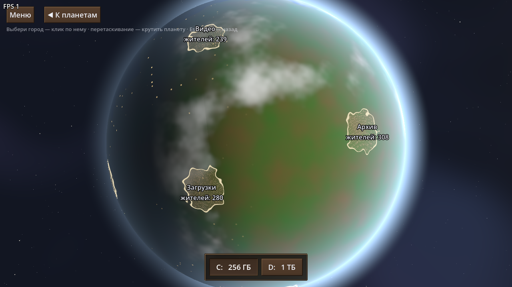
На глобусе видны границы городов, их названия и число жителей. Выбери город — камера спустится к нему.
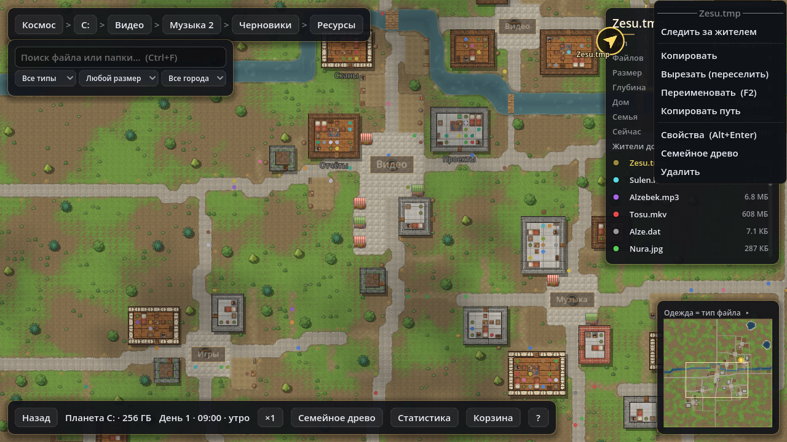
«Мои диски» читают твой компьютер: Рабочий стол, Загрузки, Документы, Изображения — сразу отдельными городами. Правой кнопкой житель открывается в своей программе или показывается в проводнике. Программы из игры не запускаются.
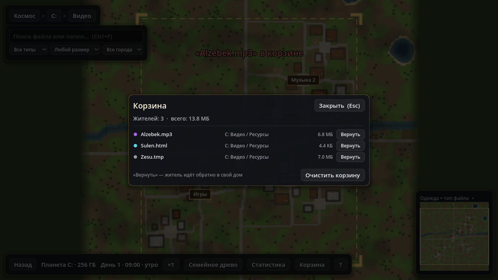
Удалённые жители попадают в корзину — их можно вернуть домой. Свойства файла, переименование (F2), копирование пути, «следить за жителем».
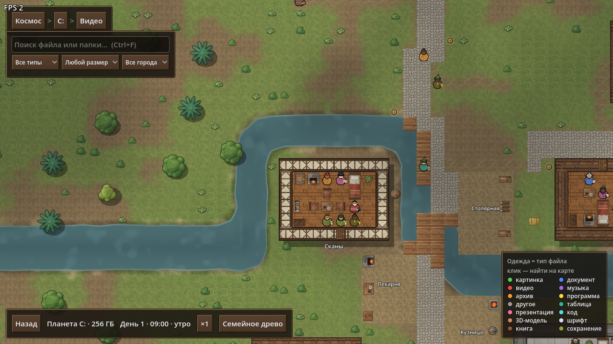
Большие города с районами, улицами и обставленными домами. Прибрежные стоят у океана, во внутренних есть озёра и реки.
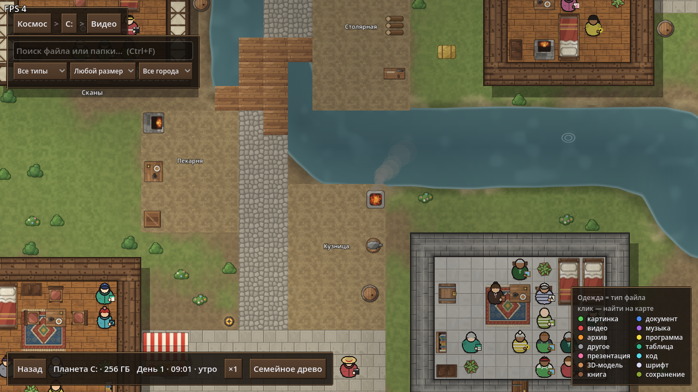
Цвет одежды — тип файла. Жители работают на рынке, в пекарне, кузнице, столярной мастерской, на полях и мостках, ходят в гости и ночью спят.
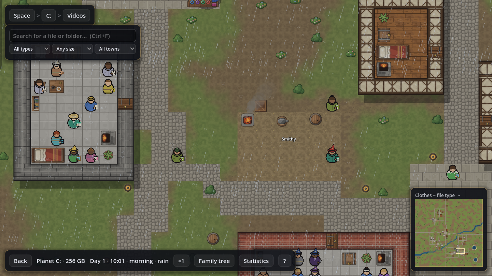
Примерно каждый третий день идёт дождь: небо темнеет, по земле и воде расходятся брызги, жители прячутся по домам. Шум дождя и звуки действий генерируются кодом.
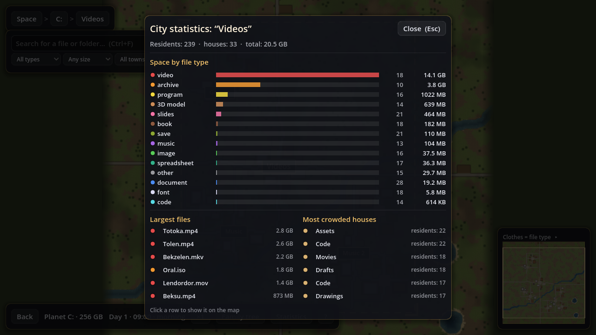
Обзор в духе анализатора диска: место по типам файлов, самые большие файлы и самые людные дома. Клик по строке покажет объект на карте.
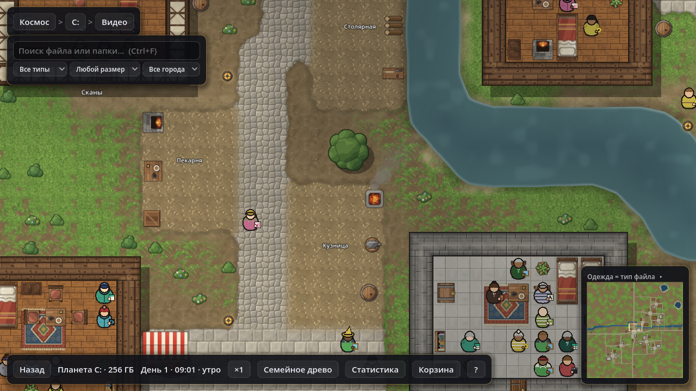
Новые текстуры: булыжная мостовая, площади, дворы и поля плавно переходят в траву и тропы. Ровные мосты через реки, круги от рыб, дым из кузницы, тени облаков, день и ночь. В углу — мини-карта.
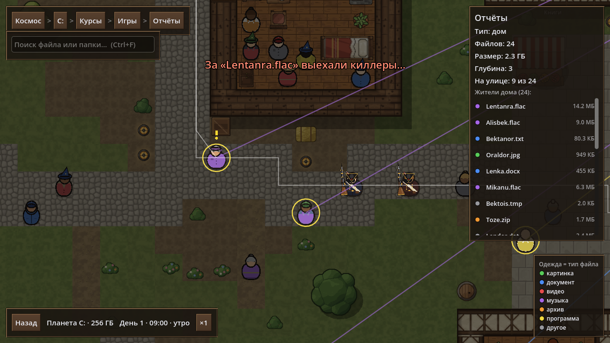
За удаляемым файлом приходят киллеры с мушкетами. Он убегает или прячется под кроватью, но его догоняют. Копирование и вставка — тоже есть.
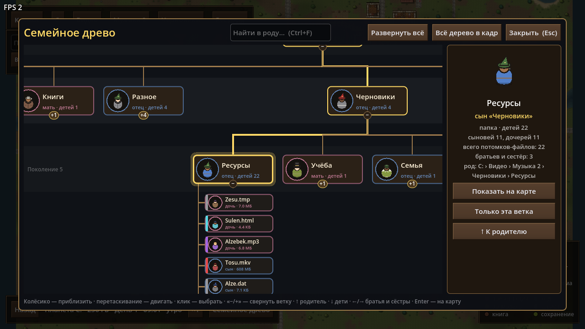
Папка — родитель, всё внутри неё — её дети: сыновья и дочери. Ходи по роду стрелками, ищи родственников, прыгай к ним на карту.
Два пути — выбирай любой.
FileColony.exe на странице Releases.Мышь и пара клавиш — больше ничего не нужно.
| Космос | Тянуть мышью — вращать камеру, колёсико — приближать, ←→ — другой диск |
| Камера | WASD или стрелки — двигать, средняя кнопка — тащить карту, колёсико — приближать к курсору, Esc — назад |
| Карта | ЛКМ — выбрать или открыть, ПКМ — меню: открыть, показать в проводнике, следить, копировать, вставить, свойства, удалить, древо |
| Файлы | Ctrl+C / Ctrl+V / Delete, F2 — переименовать, Alt+Enter — свойства, Ctrl+F — поиск |
| Город | I — статистика, L — свернуть легенду, P или Пробел — пауза, клик по мини-карте — перейти |
| Древо | T — открыть, ←→ — братья и сёстры, ↑ — родитель, ↓ — дети, Backspace — назад |
| Везде | F1 — справка по клавишам (в городе), F12 — снимок экрана |